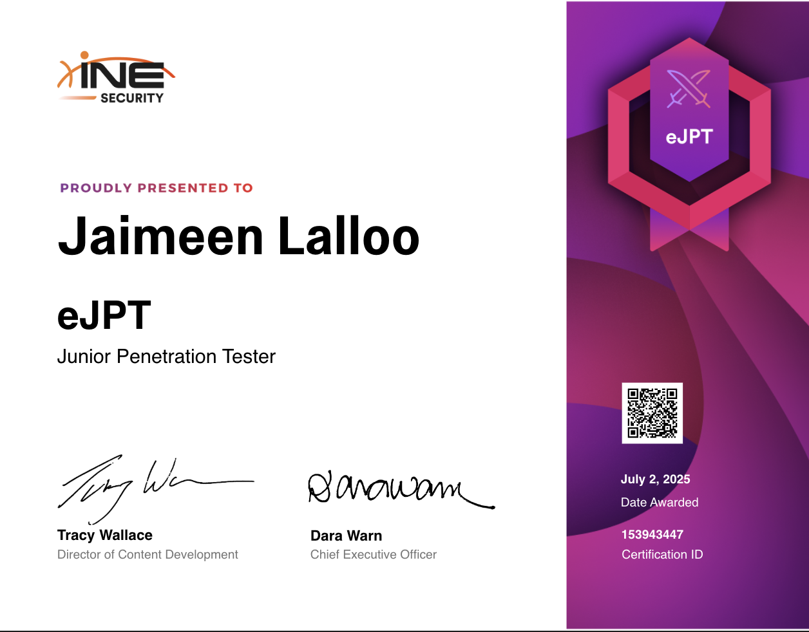
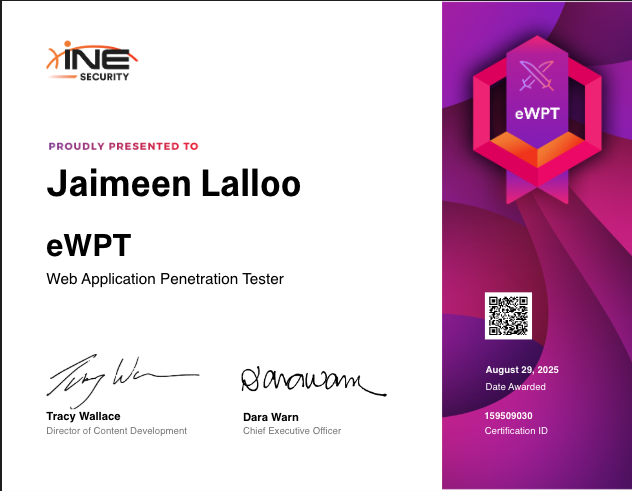

The Burp Suite Certified Practitioner (BSCP) is an official certification for web security professionals, from the makers of Burp Suite. Becoming a Burp Suite Certified Practitioner demonstrates a deep knowledge of web security vulnerabilities and the Burp Suite skills needed to carry this out.